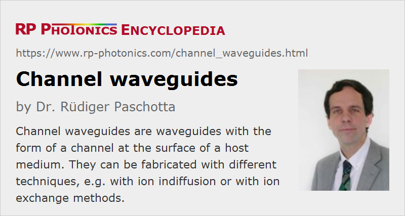

Channel Waveguides
Definition: waveguides with the form of a channel at the surface of a host medium
Alternative term: strip waveguides
More general term: waveguides
Opposite term: planar waveguides
German: Kanalwellenleiter
Category: fiber optics and waveguides
How to cite the article; suggest additional literature
Author: Dr. Rüdiger Paschotta
Channel waveguides (or strip waveguides) are a class of waveguides having the form of a channel running along the surface of some solid host medium – typically, an insulator or a semiconductor. In contrast to planar waveguides, they provide guidance of light not only in one dimension, but in two dimensions – similar to an optical fiber, only that channel waveguides are usually stiff, i.e., they cannot be bent. However, they are not necessarily straight, but can also define a curved path.
Some channel waveguides are directly at the surface of the device, so that vertical light guidance is influenced by the high refractive index contrast between the waveguide material and air. Possible disadvantages arise from the asymmetry of the waveguide modes and from the high sensitivity to irregularities of the surface, which can cause high propagation loss due to light scattering. Therefore, one sometimes realizes buried waveguides (or embedded waveguides) by covering the waveguides with an additional material, often having a similar refractive index as the substrate.
Channel waveguides are often designed to support only a single guided mode at the intended operation wavelength, just as single-mode fibers.
Fabrication Methods
Channel waveguides can made on different kinds of materials, and the used fabrication methods can be very different for different materials.
Waveguides in Semiconductors
In case of semiconductors, epitaxial techniques in combination with masks are generally used for generating waveguide structures – for example, those in various kinds of laser diodes and semiconductor optical amplifiers (SOAs). Usually, the waveguides have a relatively high numerical aperture. Often, they are covered by an electrode for injecting an electric current into the active region of a laser diode or an amplifier.
Waveguides in Dielectric Materials
Channel waveguides can be fabricated in various dielectric (insulator) materials, both in crystalline and amorphous materials – for example, in silica and in nonlinear crystal materials such as lithium niobate and lithium tantalate. Profoundly different fabrication techniques are available for such purposes – some examples:
- One may apply ion exchange techniques. Here, a strip on the surface of the substrate is exposed to some liquid over some time, and certain irons in the substrate are exchanged by others in a region just below the exposed strip surface. As a result, the refractive index is increased, allowing that region to guide light.
- Another possibility is to deposit a metallic strip (e.g. of titanium) on a substrate and then apply a high temperature to the whole device over a couple of hours or even days. One obtains some degree of diffusion of the metal into the dielectric, which also leads to an increase of refractive index.
Waveguide Properties
The following waveguide properties are particularly relevant for applications:
- The transverse shape and size of the guided waveguide modes are relevant in various respects. For example, this determines the required beam profile for efficiently launching light into the waveguide. Also, the effective mode area is relevant for the strength of any nonlinear interactions in the waveguide.
- Largely depending on the numerical aperture (and thus on the refractive index contrast), a waveguide is more or less sensitive to bend losses. For example, waveguides with very high tolerance to bending, down to bend radii far below 1 mm, can be made on silicon and other semiconductors, which is important for photonic integrated circuits.
- The propagation losses tend to increase with increasing refractive index contrast. However, relatively high propagation losses (e.g. >1 dB/mm) may often be tolerated in devices where the waveguides are rather short.
- For some applications, it is essential to have means for influencing the light propagation in the waveguide – for example, to apply electric fields for modulating the radiation or electric currents for obtaining gain in a semiconductor.
Applications of Channel Waveguides
Some typical applications of channel waveguides are explained in the following:
- Photonic integrated circuits contain channel waveguides just as electronic integrated circuits contain tiny wires. The waveguides connect optical inputs, various components and optical outputs with each other. Such circuits are used for signal processing in optical fiber communications, for example.
- In active semiconductor devices such as laser diodes, semiconductor optical amplifiers and electroabsorption modulators, channel waveguides confined the light to a small cross-section weight is exposed to laser gain or a modulating influence.
- Other kinds of waveguide lasers and amplifiers can be made with waveguides which are doped with rare earth ions or transition metal ions. Due to the smaller mode area, lasers with very low laser threshold power can be made.
- Waveguides in nonlinear crystal materials allow for nonlinear frequency conversion (e.g. frequency doubling or optical parametric oscillation) or for electrooptic modulation.
- There are optical sensors, where the active sensor element is a channel waveguide, the top surface of which is exposed to external influences. For example, an evanescent optical field may penetrate a liquid above the waveguide, so that the guided light can interact with chemicals in the liquid. One may then apply laser absorption spectroscopy for identifying chemical species and measuring their concentrations.
Questions and Comments from Users
Here you can submit questions and comments. As far as they get accepted by the author, they will appear above this paragraph together with the author’s answer. The author will decide on acceptance based on certain criteria. Essentially, the issue must be of sufficiently broad interest.
Please do not enter personal data here; we would otherwise delete it soon. (See also our privacy declaration.) If you wish to receive personal feedback or consultancy from the author, please contact him e.g. via e-mail.
By submitting the information, you give your consent to the potential publication of your inputs on our website according to our rules. (If you later retract your consent, we will delete those inputs.) As your inputs are first reviewed by the author, they may be published with some delay.
See also: waveguides, photonic integrated circuits, silicon photonics, waveguide lasers
and other articles in the category fiber optics and waveguides
|  |
If you like this page, please share the link with your friends and colleagues, e.g. via social media:
These sharing buttons are implemented in a privacy-friendly way!